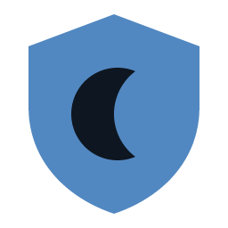

Sombra
Mensajes privados entre amigos. Cifrados de extremo a extremo, por Tor.
-
Descarga e instala
Abre
Descargar para WindowsSombra-Setup.exe. Se instala solo y se abre en tu navegador.Si Windows avisa, pulsa Más información → Ejecutar de todas formas.
-
Únete a la red
Elige Unirme a una red y pega la dirección
….onionque te han pasado. La primera conexión tarda un minuto. -
Crea tu usuario
Solo un nombre y una frase de acceso. Sin teléfono ni correo. La frase nunca sale de tu ordenador.
-
Escribe
Busca a tu amigo por su
@usuario. La primera vez, comparad el número de seguridad en persona o por llamada.
¿Quieres crear tú la red? Elige Crear mi red y comparte la dirección con Copiar invitación. Mientras tu ordenador esté encendido con Sombra abierto, los mensajes llegan.
Nadie puede leer tus mensajes, ni siquiera quien aloja la red: solo ve sobres cerrados, sin remitente.
Haz una copia de seguridad en Ajustes. Si olvidas la frase de acceso, la cuenta no se puede recuperar.